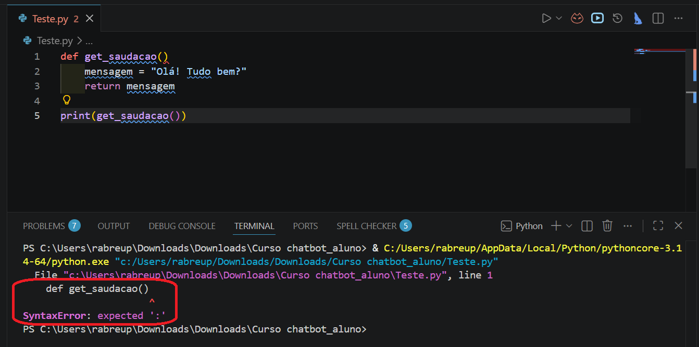
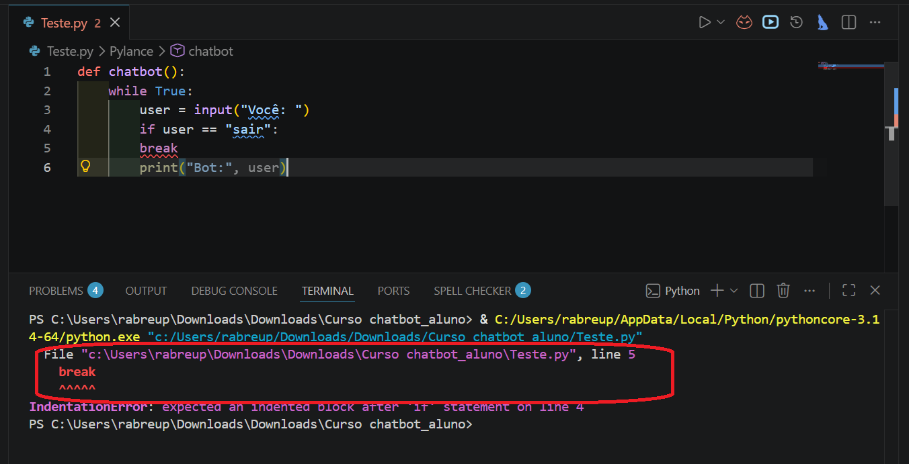
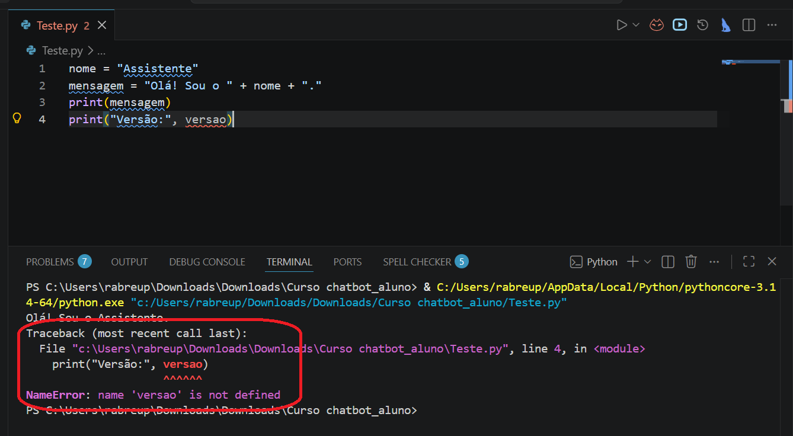
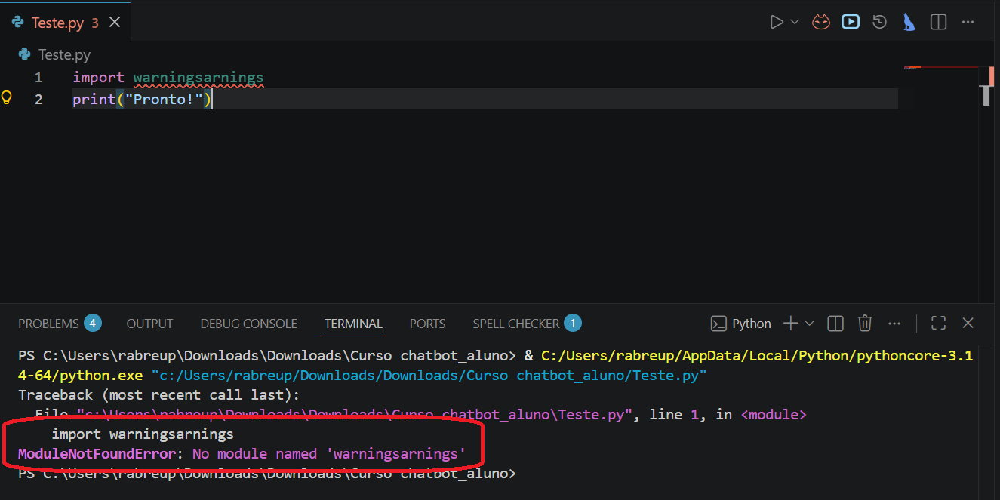
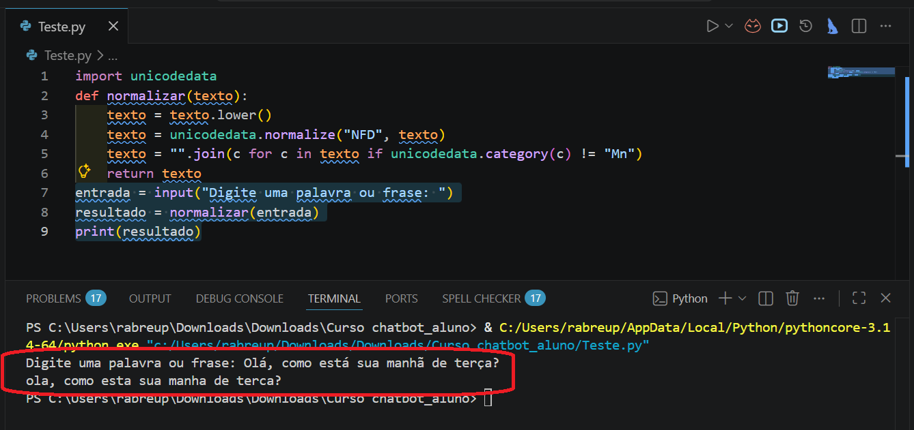

Isso é absolutamente normal e tem solução simples. O terminal parece caótico na primeira vez, mas toda mensagem de erro em Python segue a mesma estrutura: ela diz o arquivo, a linha, o trecho do código e o tipo do problema. Quando nós sabemos o que procurar, a leitura fica rápida.
Os erros mais comuns têm nomes e comportamentos previsíveis. Cada um deles apareceu, ou vai aparecer, em algum exercício do curso. Nós vemos cada tipo com calma: o código quebrado, o que o terminal mostra, e o que fazer.
O SyntaxError é o mais direto de todos. Acontece quando o Python não consegue sequer ler o código porque falta um caractere essencial: dois-pontos no final de um def ou if, parêntese que não fecha, aspas que não fecha. O Python para na primeira linha que não faz sentido e aponta com um ^ onde parou de entender.
def get_saudacao() mensagem = "Olá! Tudo bem?" return mensagem print(get_saudacao())
File "codigo_com_erro.py", line 1 def get_saudacao() ^ SyntaxError: expected ':'
| File "...", line 1 | Arquivo e número da linha onde o Python parou. Sempre o primeiro lugar para olhar. Abra o arquivo, vá para essa linha. |
| ^ | O cursor aponta onde o Python desistiu de ler. Aqui ele aponta depois do parêntese de fechamento. É onde falta o dois-pontos. |
| SyntaxError: expected ':' | O tipo do erro e a descrição. "expected ':'" significa que o Python esperava um dois-pontos naquela posição. A correção é adicionar : ao final da linha do def. |

O IndentationError acontece quando a indentação, os espaços no início de uma linha, não está no nível esperado. O Python usa esses espaços para entender o que está dentro de um bloco, como o corpo de um def, de um while ou de um if. Uma linha que deveria estar indentada mas não está quebra a estrutura inteira.
def chatbot(): while True: user = input("Você: ") if user == "sair": break print("Bot:", user)
File "codigo_com_erro.py", line 5 break ^ IndentationError: expected an indented block after 'if' statement on line 4
| expected an indented block after 'if' | O Python diz exatamente o que espera. O if na linha 4 abre um bloco, e o break deveria estar dentro dele, com um nível a mais de indentação. A correção é adicionar 4 espaços antes do break. |

O NameError aparece quando o código tenta usar um nome de variável ou função que o Python não conhece naquele momento. As causas mais comuns são erro de digitação no nome, usar a variável antes de defini-la, ou esquecer que Python diferencia maiúsculas de minúsculas: Mensagem e mensagem são nomes diferentes.
nome = "Assistente" mensagem = "Olá! Sou o " + nome + "." print(mensagem) print("Versão:", versao)
Traceback (most recent call last): File "codigo_com_erro.py", line 4, in <module> print("Versão:", versao) ^^^^^^ NameError: name 'versao' is not defined
| Traceback (most recent call last) | Aviso de que o Python vai mostrar a sequência de chamadas que levou ao erro. No NameError, quase sempre há uma única linha indicada, porque o Python detecta o problema assim que encontra o nome desconhecido. |
| ^^^^^^ | O cursor sublinha o nome problemático. Versões mais recentes do Python (3.11+) sublinham toda a expressão que causou o erro, tornando o diagnóstico ainda mais direto. |
| name 'versao' is not defined | O Python diz exatamente qual nome não encontrou. Aqui, versao nunca foi definida. A solução pode ser defini-la antes de usar, ou verificar se o nome está escrito certo. |

O ModuleNotFoundError acontece quando o código tenta importar uma biblioteca que não está instalada. É o mais simples de resolver: a mensagem diz exatamente qual módulo está faltando, e o pip install resolve.
import warningsarnings print("Pronto!")
Traceback (most recent call last): File "codigo_com_erro.py", line 1, in <module> import warningsarnings ModuleNotFoundError: No module named 'warningsarnings'
| No module named 'warningsarnings' | O nome entre aspas é exatamente o que o Python tentou importar e não encontrou. Aqui o nome não existe de verdade, é um typo de warnings. Na prática, quando isso acontece com uma biblioteca real, a correção é rodar pip install nome_da_biblioteca no terminal e tentar de novo. |

Sim. O atalho prático é sempre ler de baixo para cima. A última linha diz o tipo e a descrição, que é o mais importante. A penúltima mostra o trecho do código. E o "File ..., line N" diz onde ir. Com esse hábito, a leitura fica muito mais rápida do que parece agora.
^: o Python aponta onde parou. Corrija a partir daí.Levanta, toma um café, e a gente segue!
Não é mágica, é uma sequência bem definida de passos. Cada vez que o usuário digita algo e aperta Enter, o código executa exatamente esta cadeia, sempre na mesma ordem:
Repara no passo 4: nós enviamos o histórico completo a cada chamada. O GPT não tem memória própria entre chamadas. O que parece ser "memória" do chatbot é o histórico que o nosso código acumula e reenvia. Cada nova pergunta manda de volta tudo que já foi dito antes, e é por isso que o histórico cresce e o custo cresce junto.
E repara no passo 6: o objeto que a API devolve contém muito mais do que só o texto. O campo usage que usamos para medir tokens está ali dentro, junto com o modelo usado e o motivo de parada da resposta. As três roles também fazem parte desse fluxo: system são instruções do desenvolvedor, user são mensagens do usuário, e assistant são as respostas anteriores do próprio GPT. Misturar essas roles ou usar a errada pode fazer o GPT ignorar instruções importantes.
💡Vou aproveitar essa revisão para incluir um elemento que vimos mas não falamos dele com carinho 😁. É a função normalizar() que vale a pena entender direitinho.
É uma linha densae para entender o que a função faz, precisamos de dois conceitos. O primeiro é Unicode: o padrão internacional que define como cada caractere do mundo, letras, símbolos, acentos e emojis, é representado dentro do computador. Cada caractere tem um número único. O "a" é U+0061. O "á" com acento agudo é U+00E1. São caracteres diferentes. O segundo conceito é a normalização NFD. O "á" pode ser guardado de dois jeitos: como um caractere único e composto (U+00E1), ou como dois caracteres separados, o "a" base (U+0061) mais a marca do acento (U+0301). A normalização NFD faz essa decomposição: ela separa cada letra da sua marca de acento. Depois da decomposição, os acentos ficam como caracteres independentes com categoria "Mn" (Non-spacing Mark), e é exatamente essa categoria que nós filtramos fora. Sem esse passo de decomposição, o filtro não consegue remover os acentos de letras compostas como "á", "ç" ou "ã" do dia a dia.
Veja a função completa e correta, com as três linhas:
import unicodedata def normalizar(texto): texto = texto.lower() texto = unicodedata.normalize("NFD", texto) texto = "".join(c for c in texto if unicodedata.category(c) != "Mn") return texto entrada = input("Digite uma palavra ou frase: ") resultado = normalizar(entrada) print(resultado)
| texto.lower() | Converte tudo para minúsculas. "HORA", "Hora" e "hora" viram todos "hora". Passo 1 da padronização. |
| normalize("NFD", texto) | Decompõe cada caractere acentuado em dois: a letra base e a marca de acento. "á" (um caractere) vira "a" + "´" (dois caracteres separados). Sem esse passo, o filtro seguinte não consegue remover os acentos de caracteres compostos como "á", "ç" ou "ã". |
| category(c) != "Mn" | Testa se o caractere é uma marca diacrítica. Depois do NFD, todos os acentos e cedilhas são caracteres com categoria "Mn". Essa condição mantém as letras base e descarta os acentos. |
| "".join(c for c ...) | Percorre o texto caractere por caractere e monta uma nova string. O for c in texto pega um caractere de cada vez. O if filtra os que não são "Mn". O "".join() junta tudo sem espaço, formando o texto limpo. |

normalizar()em outras aulas, mas sem o passo unicodedata.normalize("NFD", ...). Para textos onde o usuário digita com acentos compostos, como "horário" ou "sáir", essa versão incompleta pode não funcionar corretamente.
Agora é a sua vez.
031_Exercicio.pydef apresentar(nome, funcao): texto = "Olá! Sou " + nome + ", seu assistente de " + funcao + "." return texto resultado = apresentar("Max" "suporte") print(resultado) print("Modelo:", modelo)
Erro 1 - SyntaxError na linha 5: falta uma vírgula entre os dois argumentos de apresentar(). O correto é apresentar("Max", "suporte").
Erro 2 - NameError na linha 7: modelo é usada sem ter sido definida. Basta definir antes do print, por exemplo modelo = "gpt-4o-mini".
def apresentar(nome, funcao): texto = "Olá! Sou " + nome + ", seu assistente de " + funcao + "." return texto modelo = "gpt-4o-mini" resultado = apresentar("Max", "suporte") print(resultado) print("Modelo:", modelo)
032_Exercicio.py e rode sem alterardef chatbot(): print("Chat iniciado. Digite 'sair' para encerrar.") while True: user = input("Você: ").lower() if user == "sair": break if "oi" in user: print("Bot: Olá!", versao_bot) else: print("Bot: Não entendi.") chatbot()
IndentationError: o break está no mesmo nível do if, mas deveria estar um nível dentro. Adicione 4 espaços extras antes do break.
NameError: versao_bot não foi definida. Defina antes de chamar chatbot(), por exemplo versao_bot = "v1.0".
versao_bot = "v1.0" def chatbot(): print("Chat iniciado. Digite 'sair' para encerrar.") while True: user = input("Você: ").lower() if user == "sair": break if "oi" in user: print("Bot: Olá!", versao_bot) else: print("Bot: Não entendi.") chatbot()
import warningsarnings def saudacao(nome) mensagem = "Olá, " + nome + "!" return mensagem def chatbot(): print(saudacao("visitante")) while True: user = input("Você: ").lower() if user == "sair": break print("Bot:", resposta) chatbot()
#biblioteca não existe, remova ou substitua por uma real def saudacao(nome): # faltava o : no final mensagem = "Olá, " + nome + "!" return mensagem def chatbot(): print(saudacao("visitante")) while True: user = input("Você: ").lower() if user == "sair": break #faltava indentação resposta = "Não entendi, pode repetir?" #variável não estava definida print("Bot:", resposta) chatbot()
034_Exercicio.pynormalizar(texto) com as três linhas: lower, NFD, join com filtro "Mn""Horário", "SAIR", "olá tudo bem?", "ação", "São Paulo"import unicodedata def normalizar(texto): texto = texto.lower() texto = unicodedata.normalize("NFD", texto) texto = "".join(c for c in texto if unicodedata.category(c) != "Mn") return texto testes = ["Horário", "SAIR", "olá tudo bem?", "ação", "São Paulo"] for t in testes: print(f"'{t}' -> '{normalizar(t)}'")
035_Exercicio.py com um chatbot para um tema à sua escolhanormalizar() com NFD no input do usuáriotry/except na chamada à APItotal_entrada e total_saida com resposta.usage e mostre o resumo ao digitar "sair"from openai import OpenAI import os, unicodedata, httpx from dotenv import load_dotenv load_dotenv() client = OpenAI( api_key=os.getenv("OPENAI_API_KEY"), http_client=httpx.Client(verify=False) ) def normalizar(texto): texto = texto.lower() texto = unicodedata.normalize("NFD", texto) texto = "".join(c for c in texto if unicodedata.category(c) != "Mn") return texto mensagens = [ { "role": "system", "content": ( # CONTEXTO "Você é a assistente virtual da Biblioteca Municipal Leitura Viva. " # TAREFA "Responda apenas sobre acervo, empréstimos, horários e eventos. " "Para outros assuntos, diga educadamente que só pode ajudar com a biblioteca. " # FORMATO "Responda em no máximo 3 frases. " # RESTRIÇÕES "Use tom acolhedor. Responda sempre em português." ) } ] total_entrada = 0 total_saida = 0 print("Leitura Viva: Olá! Como posso ajudar?") print("(Digite 'sair' para encerrar)\n") while True: entrada = input("Você: ").strip() if normalizar(entrada) == "sair": print("\n-- Resumo da sessão --") print(f"Tokens de entrada : {total_entrada}") print(f"Tokens de saída : {total_saida}") print(f"Total : {total_entrada + total_saida}") custo = (total_entrada * 0.00000015) + (total_saida * 0.0000006) print(f"Custo estimado : U${custo:.6f}") print("----------------------") break if not entrada: continue mensagens.append({"role": "user", "content": entrada}) try: resposta = client.chat.completions.create( model="gpt-4o-mini", messages=mensagens, max_tokens=120, temperature=0.3 ) texto = resposta.choices[0].message.content total_entrada += resposta.usage.prompt_tokens total_saida += resposta.usage.completion_tokens except Exception as e: print(f"Erro: {e}") texto = "Não consegui responder agora. Tente novamente." mensagens.append({"role": "assistant", "content": texto}) print(f"Leitura Viva: {texto}\n") if len(mensagens) > 10: mensagens = [mensagens[0]] + mensagens[-9:]
Nos vemos lá!